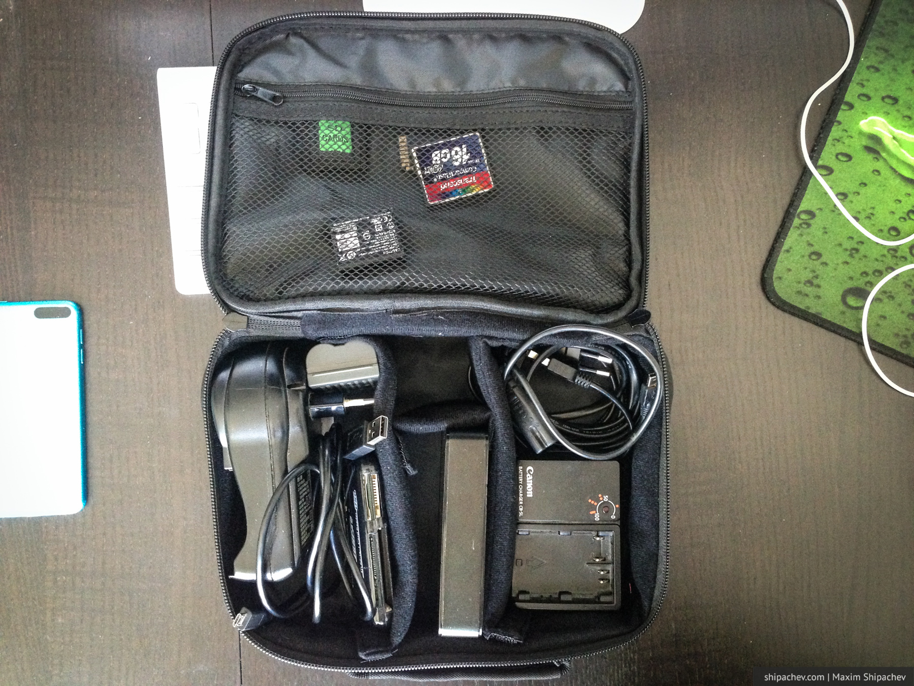
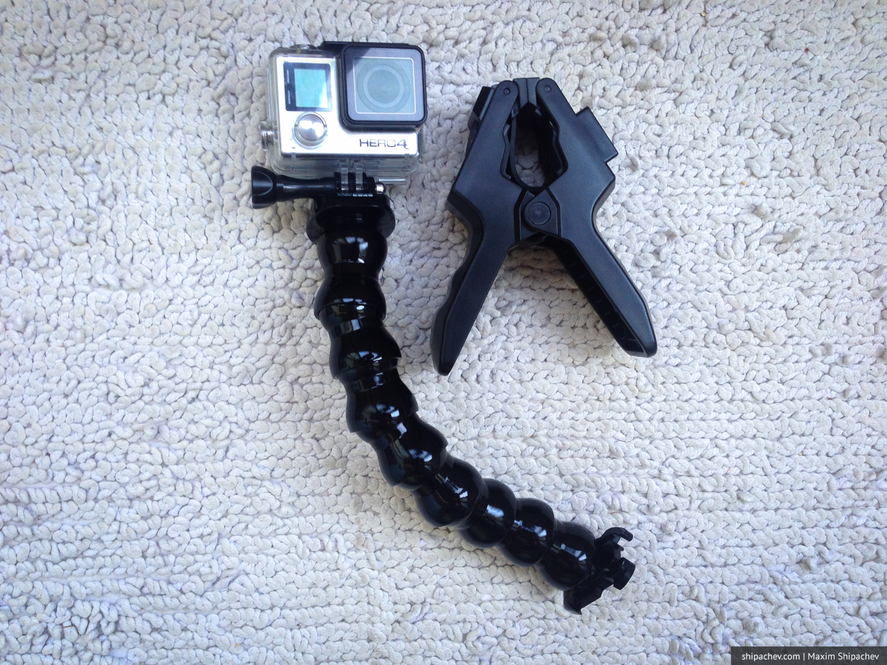
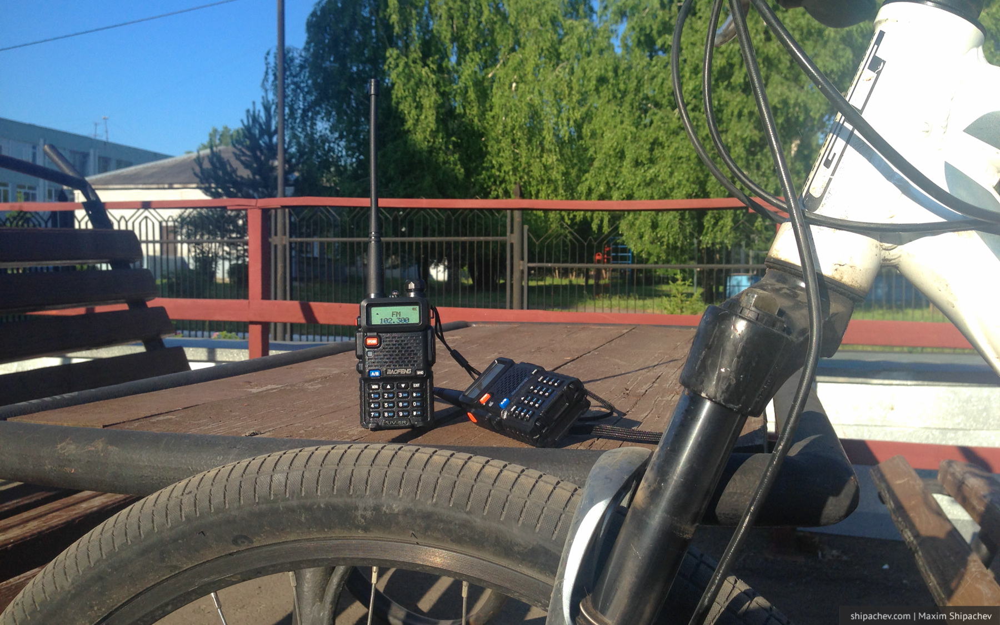
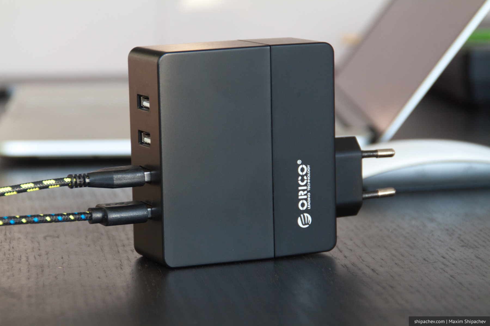
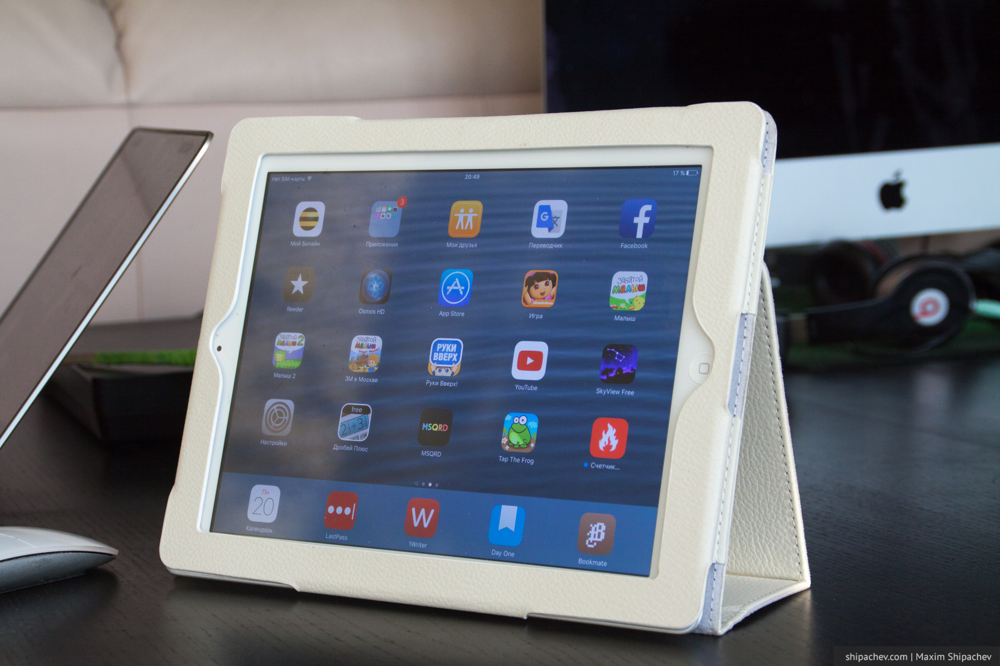
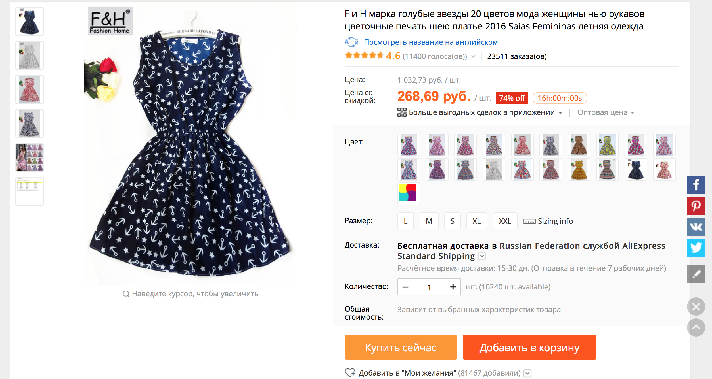
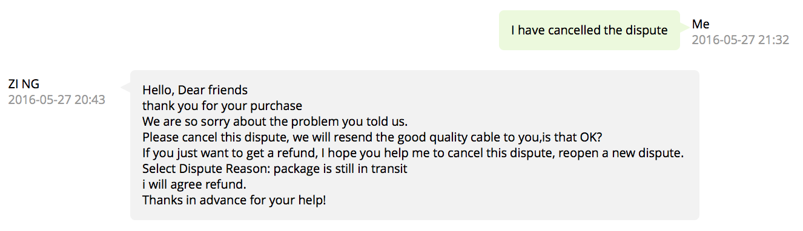

Алиэкспресс — самый известный китайский интернет-магазин. Строго говоря, это не интернет-магазин, а витрина, на которой представляют свои товары китайские (и даже российские) компании, но у алиэкспресс есть свой процессинг и личный кабинет, поэтому всё выглядит как интернет-магазин.
Бесплатная доставка
Покупателей со всего мира Алиэкспресс привлекает не только низкими ценами. Неоспоримым преимуществом китайского магазина является бесплатная доставка на любые товары. Даже, если товар (ложечка для отделения яичного белка от желтка) стоит 27 рублей, её доставка не будет вам стоить ничего.

Недорогие товары обычно доставляют обычной почтой. Если габариты покупки невелики, то товар положат вам прямо в почтовый ящик. Не нужно будет идти на почту, заполнять квитанции, стоять в очереди. Товары подороже могут доставить курьерской службой прямо в квартиру. И даже в этом случае доставка не будет стоить ничего. Срок доставки товаров в Кемерово в среднем равняется 1 месяцу. Ко многим покупкам продавцы дают номер отслеживания посылки, но я им ни разу не пользовался.
Что покупать на Алиэкспресс
В Алиэкспресс огромный ассортимент товаров. По крайней мере так может показаться с самого начала. Правда, при ближайшем рассмотрении, вы поймёте, что реально хороших и недорогих товаров там не очень много. Лучше всего Алиэкспресс подходит для покупки недорогих вещей для дома, недорогой электроники, сумок. То есть тех вещей, чьи потребительские характеристики в достаточной степени предсказуемы.
Хотите вернуть часть денег от покупок?
Читайте пост «Как покупать на Aliexpress дешевле»
Тысячи людей покупают на Алиэкспресс одежду, я пока не слишком рискую. Среди отзывов то и дело встречаются комментарии о несоответствии размеров или описания. Китайцы очень часто экономят на качестве ткани. И нередко на качестве швов. Правда, пару недель назад, мы получили заказанную серую женскую майку хорошего качества, которая обошлась в 180 рублей, чем полностью довольны.
Кроме майки, я уже купил штук 5 проводов для зарядки айфонов по цене 70-100 рублей, держатель для Go Pro, ценой 300 рублей, при розничной цене 4500, зарядку с 4 портами USB, сумку для проводов и зарядников для путешествий, чехол для айпэда, две рации.





Как ни пытался, не смог найти на Алиэкспресс хороших аккумуляторов АА или видеорегистратора. Качество аккумуляторов, судя по отзывам, очень нестабильно, а хорошие видеорегистраторы стоят немногим дешевле, чем в Кемерове, при присутствующем риске брака.
Как выбрать товар
Впечатление о товаре на Алиэкспресс составить достаточно просто. Во-первых, есть сотни сайтов и блогов, владельцы которых проводят на Алиэкспресс много времени и выкладывают полноценные обзоры свои покупок, включая так называемый анпакинг (видео, где человек снимает, как он открывает посылку и рассматривает покупку впервые, вместе со зрителями). На базе Алиэкспресс работает целая платформа таких блогов, iTao.
В социальной сети iTao
Алиэкспресс долгое время давал зарабатывать таким блогерам. Любой желающий мог вступить в партнёрскую программу, и публиковать ссылки на товары со специальным кодом. Если покупатель переходил по такой ссылке, то небольшой процент от покупки доставался блогеру.
Около полугода назад правила партнерской программы Алиэкспресс значительно усложнились, стать партнёром стало сложней, а, главное, сама ссылка «учитывается» только, если вы делаете покупку сразу после перехода. Типичный же сценарий покупки, как правило, подразумевает, что проходит какое-то время между тем как покупатель впервые увидит товар, потом положит его в Корзину или в Список желаний, и только потом оплатит. Многие блогеры, таким образом, остались без доходов. Но Алиэкспресс уже в рекламе не нуждается.
Дополнительными критериями при выборе товара на Алиэкспресс, кроме цены и описания производителя, являются отзывы покупателей. Алиэкспресс подталкивает к их написанию, и на некоторые товары количество отзывов исчисляется сотнями. Кроме этого покупателю доступен рейтинг магазина в целом, количество покупок товара и срок работы магазина.

Алиэкспресс для русских
Магазин Алиэкспресс русскоязычен, насколько это возможно. Несмотря на то, что наименования товаров стали притчей в российском интернете, сам магазин вполне корректно русифицирован, и делать покупки на нём можно, если даже в школе вы изучали только русский.
Подавляющее количество покупателей на Алиэкспресс — из России. Для русскоязычных пользователей Алиэкспресс постоянно развивается. Жители России уже сегодня могут сделать покупки в Алиэкспресс Молле, специальном разделе, где продают только вещи известных брендов: Philips, Scarlett, Supra, Bosch, Polaris Bort и так далее. Доставка в этом случае осуществляется из России. Вышеупомятуная социальная сеть для шопоголиков iTao тоже работает пока только для россиян.
Защита покупателя
Китайские магазины борются за покупателя лучше, чем многие русские. Во-первых, покупателя старается защитить сама платформа Алиэкспресс. На площадке есть так называемая Защита Покупателя. Если в обозначенный срок (как правило, 45-90 дней) вы не получаете вашу покупку, то вам обещают вернуть деньги. После того, как вы получили товар, и его качество вас не устроило, вы можете в течение 15 дней открыть спор. В большинстве случаев, особенно в части недорогих покупок, продавец сам предложит вам денежную компенсацию или ещё один товар.

Магазины заботятся о своём рейтинге. Правда, нельзя не отметить, что случаи, когда люди оставались без денег, но с бракованным товарам, судя по отзывам, всё-таки бывают. Старайтесь читать отзывы перед сложной большой покупкой.
Подводя итоги, хочется сказать, что Алиэкспресс — отличный вариант обзавестись вещами, о необходимости которых вы даже не подозревали до того, как впервые открыли Алиэкспресс.
Тем более, на покупках можно дополнительно сэкономить. Читайте Как покупать на Алиэкспресс дешевле.